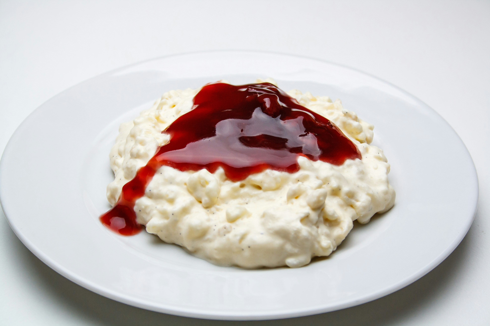

Rice Pudding

Pic: Rasmus Gundorff Sæderup from Unsplash
Rice pudding with raspberry sauce is one of my favorite desserts.
It can be beautifully refined with cinnamon, vanilla, and sugar for extra flavor.
While raspberry sauce is a classic choice, you can easily customize it by using any other fruit of your preference.
Ingredients
- 300 g of rice
- 1,5 l of milk
- 4 teaspoons of sugar
- 8 g of vanilla sugar
- 1/2 teaspoon of cinnamon
- 2 tablespoons of water
- Raspberry sauce (or any fruit sauce)
Steps
- Rinse the rice under cold water until the water runs clear.
- In a large saucepan, combine the rice, milk, sugar, vanilla sugar, and cinnamon. Bring to a boil over medium heat.
- Reduce the heat to low and simmer, stirring occasionally, until the rice is tender and the pudding has thickened (about 30-40 minutes).
- In a small saucepan, combine the water and raspberry sauce. Heat over medium heat until warmed through.
- Serve the rice pudding warm or chilled, topped with the raspberry sauce.
Home